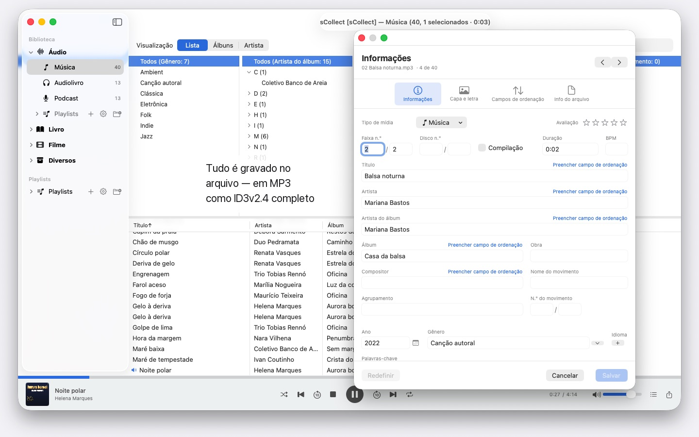
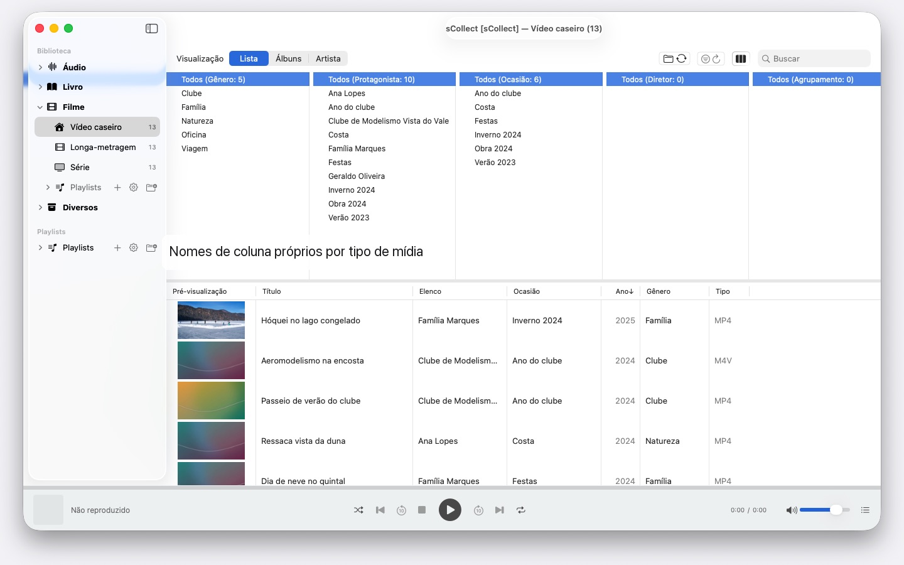

Milhares de artistas, vários Macs, qualquer macOS a partir do 14: o sCollect organiza músicas, filmes e livros e grava seus dados nos arquivos. Sem conta, sem nuvem.


O sCollect é uma biblioteca para tudo o que dá para colecionar: música, filmes, vídeos caseiros, audiolivros, podcasts e e-books — e também para coisas que não são arquivos de mídia, como moedas ou selos, fotografados e descritos. Os nomes das categorias quem define é você.
A diferença em relação a um catálogo comum: o sCollect escreve de volta. O que você digita no editor não vai só para o banco de dados, vai para os metadados do próprio arquivo. Assim o seu trabalho continua existindo mesmo que um dia você deixe de usar o sCollect.
ORDEM, SEM QUE VOCÊ PRECISE ARRUMAR
Na importação, o sCollect coloca cada arquivo no lugar certo — por tipo de mídia, artista, álbum ou data, conforme você tiver configurado. Cada tipo de mídia pode ter a sua própria pasta, inclusive em outro disco: os filmes no disco externo grande, a música no disco interno rápido.
Quem prefere deixar a coleção onde ela está, vincula em vez de copiar. Arquivos vinculados nunca são tocados.
PARA FOTOS E FILMAGENS
Quem fotografa ou filma guarda um tipo de mídia por data: na importação, os arquivos vão para pastas de ano e mês, e o nome do arquivo leva a data de captura, lida do próprio arquivo — nos vídeos, com um aviso quando a câmera omite o fuso horário. Prefixos de câmera como IMG_ somem do título se você quiser, uma data ISO é acrescentada, e a lista e o disco ordenam da mesma forma.
METADADOS QUE CHEGAM AO ARQUIVO
Um editor para itens isolados, um segundo para muitos de uma vez. Os dois escrevem no formato que o arquivo traz consigo — ID3v2.4 em MP3, a estrutura de tags de MP4 e M4A, comentários Vorbis em FLAC e OGG, os blocos de texto de AIFF e WAV, DSF em gravações DSD, EXIF, IPTC e XMP em imagens.
Onde um formato não tem campo para alguma coisa, ou um arquivo é protegido contra cópia, o sCollect coloca um arquivo acompanhante ao lado, em vez de perder a informação. Se o arquivo divergir da biblioteca, o editor avisa antes que você sobrescreva algo.
O QUE ENCURTA O TRABALHO
- Localizar/Substituir em todos os campos
- Encontrar duplicatas na categoria inteira, com um julgamento compreensível sobre qual versão é a melhor
- Um navegador de colunas como o de um programa de música, com seleção múltipla por coluna. Milhares de artistas sem rolagem infinita: agrupados pela inicial, A, AB, ABB – três cliques até o destino
- Reprodução de áudio e vídeo, com playlists e posição de reprodução memorizada
ENCONTRAR ARQUIVOS AUSENTES, EM VEZ DE PROCURAR POR ELES
Uma varredura marca cada entrada cujo arquivo não está mais lá e guarda o resultado. Uma visualização própria mostra só essas entradas e vai riscando o que você já vinculou de novo.
VÁRIOS COMPUTADORES, UMA COLEÇÃO
Uma biblioteca pode registrar cópias. O que você altera no acervo principal é levado depois para cada cópia acessível, arquivos e tags inclusive. Se uma cópia estiver offline no momento, a alteração fica pendente e é feita assim que ela voltar.
Não importa qual macOS roda em cada Mac: um com macOS 14 e outro com macOS 26 leem a mesma coleção, e nenhuma atualização do sistema a converte. Mas as cópias não são um backup.
IMPORTAÇÃO E EXPORTAÇÃO
Coleções existentes entram pelo XML do iTunes, com avaliações e playlists. A saída é como sCollect-XML — sem perdas, para mudança e backup —, como playlist para o Apple Music ou como iTunes-XML.
NO SEU MAC, E SÓ NELE
Sem contas, sem nuvem, sem análise, sem publicidade. O sCollect trabalha exclusivamente com as pastas que você entrega a ele.
Por isso o sCollect também não importa CDs nem busca informações das faixas na internet — o Apple Music já faz as duas coisas. Importe o CD lá como AAC, Apple Lossless ou MP3, e os arquivos levam suas informações para o sCollect. Assim, nenhum serviço fica sabendo o que você coleciona nem como organiza.
Em 24 idiomas de livre escolha, cada um com ajuda completa.
- Requer macOS 14 ou posterior
- 24 idiomas
- Suporte: SwiftAppsBavaria@gmx.net
Mais Apps
sVectorLift
Abrir, ver e salvar clipart vetorial antigo como SVG – CorelDRAW, Windows Metafile e CGM.
SwiftRename
Do cartão de memória ao acervo: nomear fotos e vídeos pela hora da captura, organizá-los por ano e mês e detectar duplicatas — também em RAW.
sName2Date
Gravar a data do nome do arquivo como data de captura em fotos, vídeos e gravações de áudio – para que um arquivo como IMG_20240115_103000.jpg fique na ordem certa em qualquer gerenciador de fotos. Os dados de imagem e de vídeo ficam intactos; PDFs e outros arquivos sem data de captura recebem a data do arquivo e, se você quiser, o nome também passa para a notação ISO. Árvores de pastas inteiras de uma só vez, e cada operação pode ser desfeita com ⌘Z.
sName2Date Lite
A edição para um arquivo por vez: gravar a data do nome do arquivo como data de captura em uma foto, um vídeo ou uma gravação de áudio, defini-la manualmente, passar o nome para a notação ISO e desfazer tudo com ⌘Z – os mesmos recursos do sName2Date, só que sem pastas inteiras.
sCollectPlay
O player da biblioteca: reproduza música, filmes, audiolivros e podcasts diretamente de uma pasta, de um XML do iTunes ou de uma biblioteca do sCollect – sem alterar nada nas tags dos arquivos. Com playlists, faixas de áudio e de legendas e, nos filmes, câmera lenta e avanço quadro a quadro. O que o macOS não reproduz sozinho, como MKV, AVI ou DSD, é enviado para um player externo.
sCollectPlay Lite
A edição enxuta do sCollectPlay: basta abrir uma pasta, um XML do iTunes ou uma biblioteca do sCollect e reproduzir música, filmes, audiolivros e podcasts – com playlists, faixas de áudio e de legendas, câmera lenta e avanço quadro a quadro. Uma fonte por sessão; o navegador de colunas, as playlists próprias e as fontes usadas recentemente ficam reservados à versão completa.
sBikeBridge
Analise seus passeios de bicicleta sem enviá-los para um portal: importe arquivos FIT de qualquer ciclocomputador que grave nesse formato, além de GPX e TCX. Os passeios ficam em uma biblioteca própria no Mac – com mapa, potência e frequência cardíaca, fotos e notas; a importação detecta duplicatas. Indicadores por ano ou mês e filtros por distância, ganho de elevação e duração tornam os passeios comparáveis. Se você quiser, o mapa também fica disponível offline.